I'm Aaron and I have some neat stuff to show you...

Newsletter for Amazon Sellers
Delivering a newsletter to Amazon sellers across the globe helps them stay up-to-date on new policies, marketplace updates, and tips for growing their business. The objective of the program is to keep Amazon sellers informed and to create a vehicle for communication across 12 markets in 8 languages.
My role
My role as the UX designer is to gather insights from Amazon sellers, craft the narrative, design the layout, align customer needs with business goals, execute the production of the newsletter, segment user groups across 12 markets, and deploy the newsletter.
- Design leadership
- User research
- Project management
- Product definition
- Visual design
- HTML Coding
- Campaign Management
- Communication strategy
Design
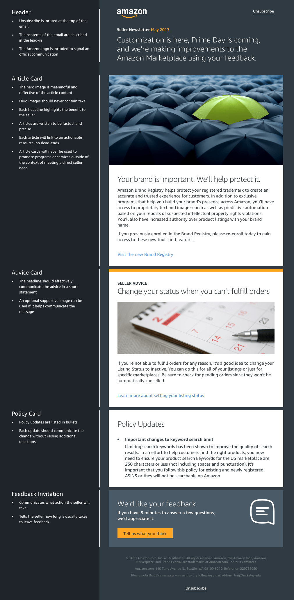Outcome
- The Seller Newsletter was successfully launched worldwide across 12 markets and translated to 8 languages in May 2017 and continues to be released monthly to-date
- Open-rate exceeded expectations at 34% with the first edition and a 0.5% increase month-to-month
- Satisfaction score ranged from averaged 4.2/5 in the first 6 months
- Seller Trust Index showed positive impact after 3 months with continued influence
- Feedback from the newsletter survey provides valuable insights that help shape new features of the newsletter and Marketplace itself
- The newsletter project helped to inform and shape the broader communication strategy with sellers
- Content collected and published in the newsletter will soon be pushed across existing channels as well as new ones like Facebook and Twitter to reach more sellers
- After the 4th newsletter, internal distribution started to the Amazon Marketplace organization and to executive leadership
People
- Amazon Sellers played a huge role in helping us understand what to build by providing feedback and participating in experiments.
- Leadership from each of Amazon's worldwide markets provided valuable insight and considerations. They were also the source for market-specific content.
- The editorial team was instrumental in executing each article in-line with the vision of the newsletter. They also segmented market-specific content and coordinated with the translation teams.
- The project manager helped to form the intake process for new content suggestions and managed the production of the newsletter.
- The UX team gathered insights from sellers, developed a communication strategy, and executed the design and production of the newsletter month-to-month.
Iteration
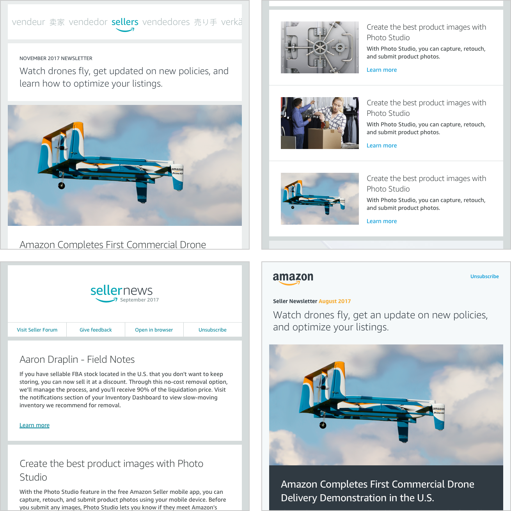Concept - Buzz Messenger
Amazon Buzz is designed to give Amazon employees a way to communicate that’s secure, fast, and integrated with tools they use day-to-day. Buzz allows users to have 1-on-1 conversations, create meetings, share files, give feedback, and track projects.
My role
I designed the Buzz concept as part of a pitch to the team responsible for maintaining the tools Amazon employees use. I used email surveys, in-person interviews, and an analysis of the current tool-set available to employees to shape the design and feature-set of Buzz.
Objective
Buzz will combine common tasks that Amazon employees usually use multiple tools to achieve. Buzz offers a more streamlined way to communicate across the company that’s easy to use and familiar.
Meeting view
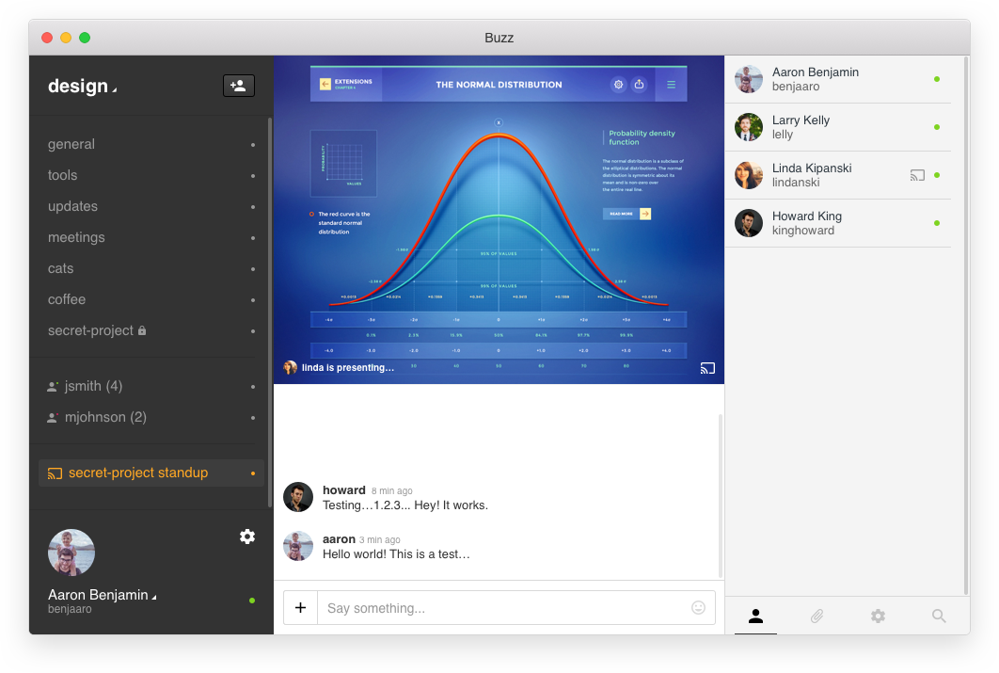File view
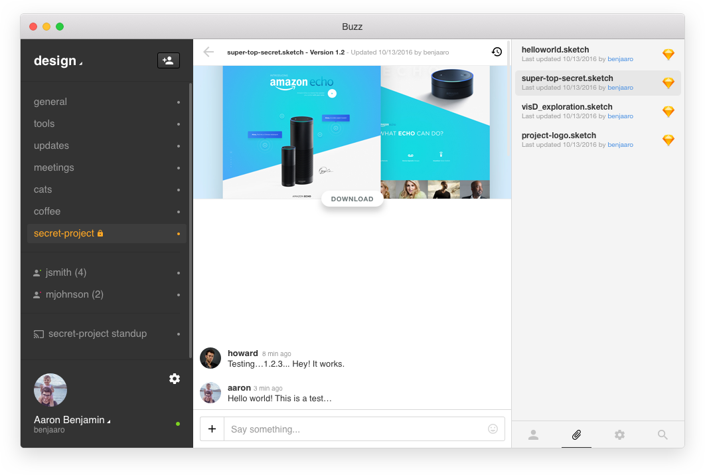Dummi.io
Dummi offers designers and developers an approachable way to generate randomized data for their projects. Dummi was designed to remove the barrier of relying on coding skills to call data from an API and to make the data output portable and consumable by design tools, prototypes, or testing environments.
My role
I designed and built Dummi for my own use. I needed a way to create static JSON files to populate my FramerJS prototypes with data without relying on dynamic data from an external source or setting up my own data source. When I put Dummi online, feedback began rolling in on Twitter for new features and updates. I still maintain and improve Dummi today with the help of 2 awesome volunteers.
Objective
A designer can use Dummi to generate data they need to create a real-world mockup or prototype. Using real data instead of placeholders allows designers to design in context.
Current design
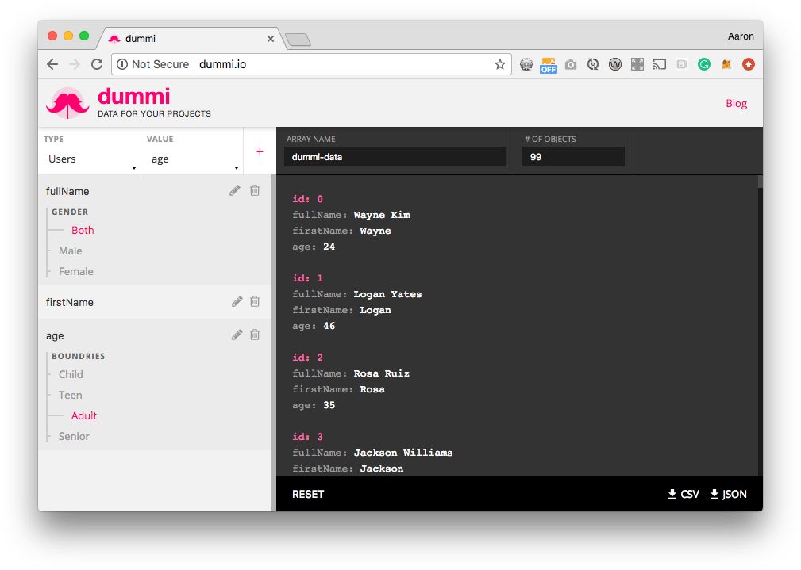Custom key-name feature
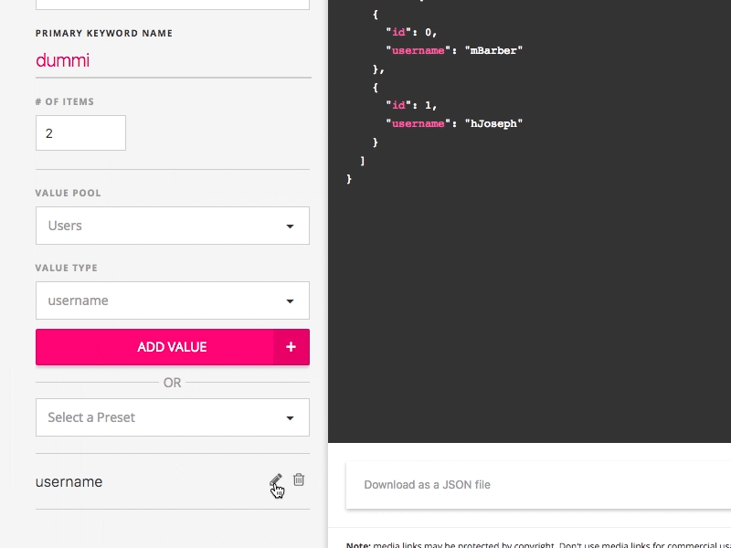Version 1 (2016)
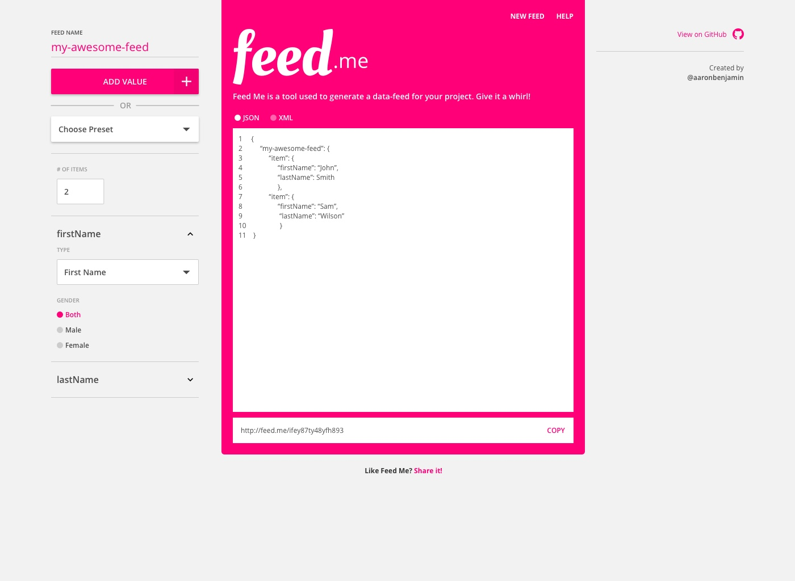Working version (2018)
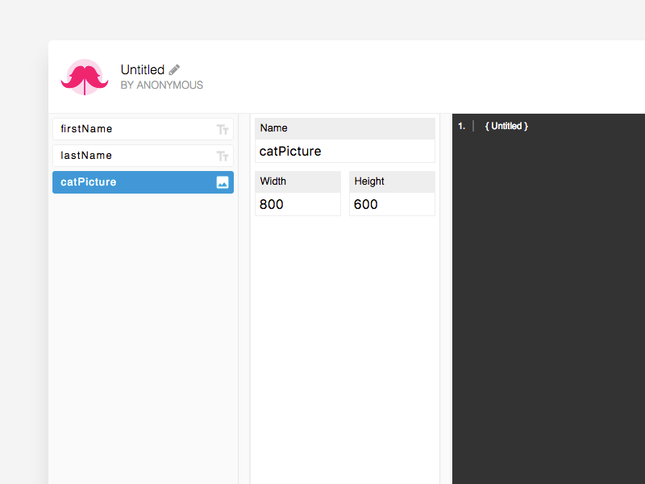Applause
Today, restaurant waiters are left shortchanged because of dated gratuity practices that make the dining experience awkward for both the customer and the waiter.
My role
I developed a product to change the way we end a meal when dining out. I surveyed and interviewed a group of 17 people who work as servers in a restaurant to better understand how they get feedback from customer and the friction they experience with modern tipping practices. I designed and prototyped Applause and am currently learning Java to begin developing it for Android.
Objective
By re-framing the process, Applause aims to modernize the dining experience to better suit the way we think about gratuities. Applause will also provide waiters with a mechanism to measure their performance, collect feedback, and advance their careers.
Open score-card
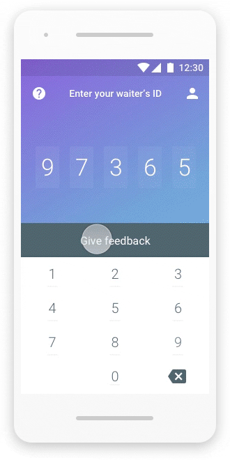Score-card response
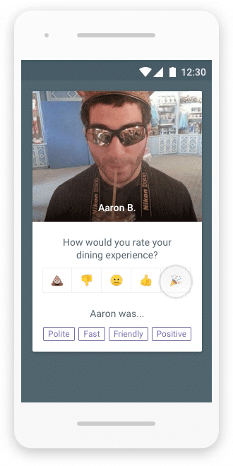Gratuity recommendation
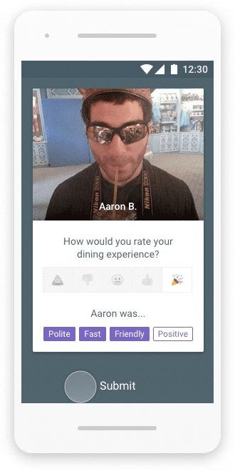Waiter login
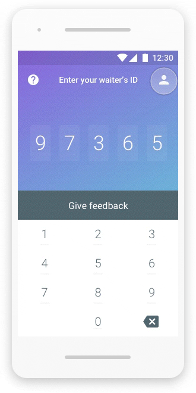Feedback dashboard
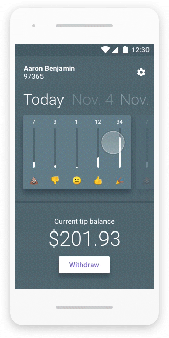